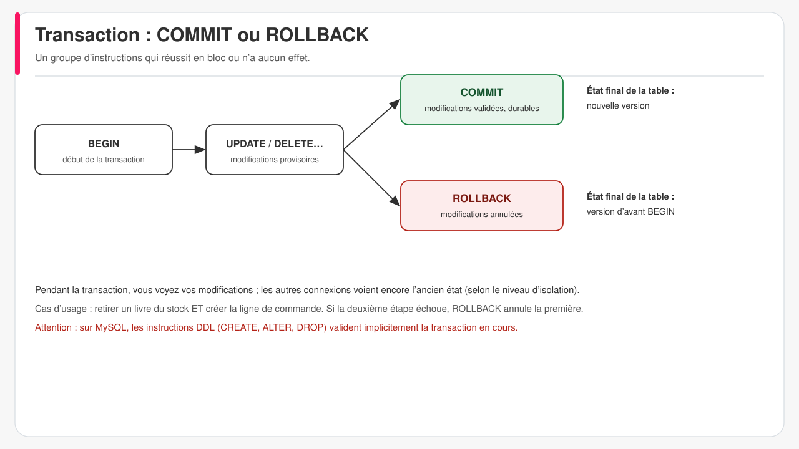

UPDATE : modifier des lignes existantes
UPDATE nom_table
SET colonne1 = valeur1, colonne2 = valeur2
WHERE condition;
SET indique les nouvelles valeurs ; WHERE désigne les lignes concernées. Le catalogue passe Les Misérables à 13,50 € :
UPDATE books
SET unit_price = 13.50
WHERE book_id = 1;
SELECT book_id, title, unit_price
FROM books
WHERE book_id = 1;
Résultat attendu sur le jeu de données de référence (obtenu en exécutant la requête lors de la génération du cours).
| book_id | title | unit_price |
|---|---|---|
| 1 | Les Misérables | 13.50 |
Le prix de la ligne déjà enregistrée dans une commande (order_items.unit_price) ne change pas : c’est précisément le rôle de cette colonne (chapitre 2).
On peut calculer la nouvelle valeur à partir de l’ancienne, et modifier plusieurs lignes à la fois. Augmentation de 10 % des livres informatiques :
UPDATE books
SET unit_price = ROUND(unit_price * 1.10, 2)
WHERE category_id = 5;
SELECT book_id, title, unit_price
FROM books
WHERE category_id = 5
ORDER BY book_id;
Résultat attendu sur le jeu de données de référence (obtenu en exécutant la requête lors de la génération du cours).
| book_id | title | unit_price |
|---|---|---|
| 14 | Python pour les curieux | 32.89 |
| 15 | SQL pas à pas | 38.39 |
Prévisualiser avant de modifier
Avant un UPDATE ou un DELETE, écrivez le même WHERE dans un SELECT pour voir quelles lignes seront touchées :
SELECT book_id, title, unit_price
FROM books
WHERE category_id = 5
ORDER BY book_id;
Résultat attendu sur le jeu de données de référence (obtenu en exécutant la requête lors de la génération du cours).
| book_id | title | unit_price |
|---|---|---|
| 14 | Python pour les curieux | 29.90 |
| 15 | SQL pas à pas | 34.90 |
Si cette liste est celle que vous attendez, remplacez SELECT … par UPDATE … SET … en gardant le WHERE. Cette habitude évite la plupart des accidents.
Le danger : UPDATE sans WHERE
Sans WHERE, toutes les lignes sont modifiées, sans avertissement :
UPDATE books
SET stock_quantity = 0;
SELECT COUNT(*) AS books_with_stock
FROM books
WHERE stock_quantity > 0;
Résultat attendu sur le jeu de données de référence (obtenu en exécutant la requête lors de la génération du cours).
| books_with_stock |
|---|
| 0 |
Plus aucun livre en stock ! Sur une copie ce n’est pas grave ; sur la vraie base, c’est un incident. Les protections : prévisualiser, utiliser une transaction (ci-dessous), travailler avec un compte aux droits limités (chapitre 3).
Modifier selon une autre table
La condition ou la valeur peut venir d’une sous-requête (chapitre 9). La commande 3 vient d’être expédiée : mise à jour du statut et de la date, avec contrôle.
UPDATE orders
SET status = 'shipped', shipped_date = '2024-06-23'
WHERE order_id = 3 AND status = 'paid';
SELECT order_id, status, shipped_date
FROM orders
WHERE order_id = 3;
Résultat attendu sur le jeu de données de référence (obtenu en exécutant la requête lors de la génération du cours).
| order_id | status | shipped_date |
|---|---|---|
| 3 | shipped | 2024-06-23 |
Remarquez AND status = 'paid' : on ne modifie la commande que si elle est dans l’état attendu. Autre exemple, la commande 4 est livrée : on retire du stock la quantité commandée.
UPDATE books
SET stock_quantity = stock_quantity - (SELECT SUM(oi.quantity)
FROM order_items AS oi
WHERE oi.book_id = books.book_id AND oi.order_id = 4)
WHERE book_id IN (SELECT book_id FROM order_items WHERE order_id = 4);
SELECT book_id, title, stock_quantity
FROM books
WHERE book_id = 15;
Résultat attendu sur le jeu de données de référence (obtenu en exécutant la requête lors de la génération du cours).
| book_id | title | stock_quantity |
|---|---|---|
| 15 | SQL pas à pas | 9 |
Le stock de SQL pas à pas passe de 10 à 9.
Les contraintes protègent aussi les modifications
UPDATE order_items
SET quantity = 0
WHERE order_item_id = 1;
Message d’erreur obtenu avec SQLite (les messages de PostgreSQL et MySQL sont rédigés autrement, mais l’instruction est aussi refusée) :
IntegrityError: CHECK constraint failed: quantity > 0
Une quantité nulle viole CHECK (quantity > 0) : la modification est refusée en entier.
DELETE : supprimer des lignes
DELETE FROM nom_table
WHERE condition;
DELETE supprime des lignes (pas la table : DROP TABLE supprime la table). Comme pour UPDATE, sans WHERE, toutes les lignes disparaissent.
La commande 6 (annulée, sans paiement) est supprimée. Grâce à ON DELETE CASCADE (chapitre 4), ses lignes de commande partent avec elle :
DELETE FROM orders
WHERE order_id = 6;
SELECT COUNT(*) AS remaining_items_of_order_6
FROM order_items
WHERE order_id = 6;
Résultat attendu sur le jeu de données de référence (obtenu en exécutant la requête lors de la génération du cours).
| remaining_items_of_order_6 |
|---|
| 0 |
À l’inverse, supprimer un client qui a des commandes est refusé par la règle RESTRICT :
DELETE FROM customers
WHERE customer_id = 1;
Message d’erreur obtenu avec SQLite (les messages de PostgreSQL et MySQL sont rédigés autrement, mais l’instruction est aussi refusée) :
IntegrityError: FOREIGN KEY constraint failed
Cette protection est voulue : sans elle, des commandes pointeraient vers un client disparu. Pour supprimer un client, il faudrait d’abord traiter ses commandes (en respectant les paiements, eux aussi protégés par RESTRICT).
Les transactions
Une transaction regroupe plusieurs instructions en une opération indivisible : soit toutes sont validées, soit aucune. Exemple : enregistrer une commande suppose d’insérer la commande, d’insérer ses lignes et de réduire le stock. Si la deuxième étape échoue, la première ne doit pas rester.

BEGIN(ouSTART TRANSACTION, accepté par MySQL et PostgreSQL) : début.COMMIT: valide définitivement.ROLLBACK: annule tout depuisBEGIN.
Voyons un essai catastrophique, annulé : on supprime toutes les lignes de commande, on constate, puis on annule.
BEGIN;
DELETE FROM order_items;
SELECT COUNT(*) AS items_inside_transaction FROM order_items;
ROLLBACK;
Résultat attendu sur le jeu de données de référence (obtenu en exécutant la requête lors de la génération du cours).
| items_inside_transaction |
|---|
| 0 |
Dans la transaction, la table est vide. Après le ROLLBACK, tout est revenu :
BEGIN;
DELETE FROM order_items;
ROLLBACK;
SELECT COUNT(*) AS items_after_rollback FROM order_items;
Résultat attendu sur le jeu de données de référence (obtenu en exécutant la requête lors de la génération du cours).
| items_after_rollback |
|---|
| 25 |
25 lignes : la suppression n’a jamais eu lieu. Enregistrement complet d’une commande, validée par COMMIT :
BEGIN;
INSERT INTO orders (customer_id, order_date) VALUES (10, '2025-02-02');
INSERT INTO order_items (order_id, book_id, quantity, unit_price) VALUES (15, 3, 1, 8.90);
UPDATE books SET stock_quantity = stock_quantity - 1 WHERE book_id = 3;
COMMIT;
SELECT o.order_id, o.status, oi.book_id, b.stock_quantity
FROM orders AS o
INNER JOIN order_items AS oi ON oi.order_id = o.order_id
INNER JOIN books AS b ON b.book_id = oi.book_id
WHERE o.order_id = 15;
Résultat attendu sur le jeu de données de référence (obtenu en exécutant la requête lors de la génération du cours).
| order_id | status | book_id | stock_quantity |
|---|---|---|---|
| 15 | pending | 3 | 29 |
Les trois instructions sont validées ensemble (le stock de Germinal passe de 30 à 29). Un point de sauvegarde permet d’annuler seulement une partie :
BEGIN;
UPDATE books SET stock_quantity = stock_quantity + 5 WHERE book_id = 1;
SAVEPOINT before_price;
UPDATE books SET unit_price = 1.00 WHERE book_id = 1;
ROLLBACK TO SAVEPOINT before_price;
COMMIT;
SELECT book_id, unit_price, stock_quantity FROM books WHERE book_id = 1;
Résultat attendu sur le jeu de données de référence (obtenu en exécutant la requête lors de la génération du cours).
| book_id | unit_price | stock_quantity |
|---|---|---|
| 1 | 12.90 | 45 |
Le stock augmente de 5 (validé), le prix absurde à 1 € est annulé.
Différences entre moteurs
| Sujet | PostgreSQL | MySQL | SQLite |
|---|---|---|---|
| Début | BEGIN ou START TRANSACTION |
START TRANSACTION ou BEGIN |
BEGIN |
| Mode par défaut dans un client | Chaque instruction est validée seule (autocommit) | Idem (InnoDB) | Idem |
Les instructions DDL (CREATE, ALTER, DROP) |
Transactionnelles (annulables) | Validées implicitement : un ROLLBACK ne les annule pas |
Transactionnelles |
| Annuler un point de sauvegarde | ROLLBACK TO SAVEPOINT nom |
idem | idem |
Ces trois comportements DDL ont été constatés sur PostgreSQL 16, MySQL 8.0.46 et SQLite 3.45. Sous MySQL, un CREATE TABLE exécuté entre START TRANSACTION et ROLLBACK reste créé.
Recharger les données de démonstration
Après vos essais, remettez la base dans l’état de référence avec le script 04_reset de votre moteur (voir le README). Il supprime les tables, les recrée et recharge les 7, 12, 15, 14, 25 et 10 lignes initiales. Ne l’exécutez jamais sur une base qui contient des données réelles.
Exercice guidé : appliquer une promotion
Baissez de 20 % le prix des livres de la catégorie Jeunesse (6), arrondi à deux décimales. Prévisualisez d’abord, puis modifiez, puis contrôlez.
Afficher la correction détaillée
Prévisualisation, puis modification et contrôle :
UPDATE books
SET unit_price = ROUND(unit_price * 0.80, 2)
WHERE category_id = 6;
SELECT book_id, title, unit_price
FROM books
WHERE category_id = 6
ORDER BY book_id;
Résultat attendu sur le jeu de données de référence (obtenu en exécutant la requête lors de la génération du cours).
| book_id | title | unit_price |
|---|---|---|
| 12 | Alice au pays des merveilles | 5.60 |
| 13 | Le Livre de la jungle | 6.40 |
Le WHERE category_id = 6 limite la modification à deux livres (7,00 → 5,60 ; 8,00 → 6,40). Erreur habituelle : oublier le WHERE et brader tout le catalogue.
Exercice autonome : nettoyer les commandes annulées
Supprimez les commandes annulées sans paiement, puis comptez les commandes restantes. Réfléchissez : que deviennent leurs lignes de commande ?
Afficher la correction détaillée
DELETE FROM orders
WHERE status = 'cancelled'
AND NOT EXISTS (SELECT 1 FROM payments AS p WHERE p.order_id = orders.order_id);
SELECT COUNT(*) AS remaining_orders FROM orders;
Résultat attendu sur le jeu de données de référence (obtenu en exécutant la requête lors de la génération du cours).
| remaining_orders |
|---|
| 12 |
Les commandes 6 et 14 sont supprimées : 12 commandes restent. Leurs lignes disparaissent par ON DELETE CASCADE. NOT EXISTS protège les commandes annulées qui auraient un paiement (la règle RESTRICT aurait de toute façon refusé la suppression). Le WHERE combine deux conditions : c’est ce qui évite le désastre.
Exercice de débogage : la mise à jour trop large
Un stagiaire veut passer la commande 4 de pending à paid et exécute : UPDATE orders SET status = 'paid';. Que s’est-il passé, et comment s’en prémunir ?
Afficher la correction détaillée
Faute de WHERE, toutes les commandes sont passées à paid, y compris les annulées. Prévention : (1) écrire le SELECT équivalent d’abord ; (2) ouvrir une transaction (BEGIN), vérifier le nombre de lignes affectées, puis COMMIT ou ROLLBACK ; (3) cibler par clé primaire : WHERE order_id = 4. Réparation : si la transaction est encore ouverte, ROLLBACK ; sinon restaurer depuis une sauvegarde.
BEGIN;
UPDATE orders SET status = 'paid';
SELECT COUNT(*) AS orders_now_paid FROM orders WHERE status = 'paid';
ROLLBACK;
Résultat attendu sur le jeu de données de référence (obtenu en exécutant la requête lors de la génération du cours).
| orders_now_paid |
|---|
| 14 |
Valider · question 1
Voir la justification de chaque réponse
- Incorrect — Rien, car il manque une condition : SQL n’exige pas de WHERE.
- Bonne réponse — Toutes les lignes de books sont supprimées (si aucune contrainte ne s’y oppose) : Sans WHERE, toutes les lignes sont visées.
- Incorrect — La table books est supprimée : C’est DROP TABLE qui supprime la table.
Valider · question 2
Voir la justification de chaque réponse
- Incorrect — Valider les modifications : C’est COMMIT.
- Bonne réponse — Annuler toutes les modifications depuis BEGIN : La base revient à l’état de départ.
- Incorrect — Supprimer la transaction du journal : Ce n’est pas son effet.
Valider · question 3
Voir la justification de chaque réponse
- Incorrect — est annulé comme sur PostgreSQL : C’est le comportement de PostgreSQL et SQLite.
- Bonne réponse — reste créé, car le DDL valide implicitement la transaction : Constaté sur MySQL 8.0.46.
- Incorrect — provoque une erreur : Aucune erreur n’est levée.